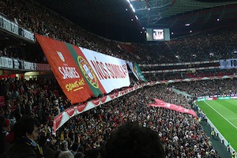

Festivals have been a long held form of entertainment for the people of Portugal, it is a time that much planning goes into and the benefits are multi-fold. Festivals help the villages to survive as well as to provide entertainment.

Soccer is Portugal is incredibly huge. You would be very hard pressed to find anyone who does not follow it, know all of the players names and although major fans, they are also not very forgiving. Passions run rather high during soccer games, and the players are true superstars and treated like royalty (as long as they play well).

Bull Fighting is also a rather popular event that the people of Portugal enjoy attending.
To date the largest and most popular way that the men of Portugal entertain themselves, is by playing cards. Card games of various types are played on a daily basis, although it would be unusual to find women joining in on a man's game. However couples are known to play cards with other couples after a meal, as a way to pass the time.